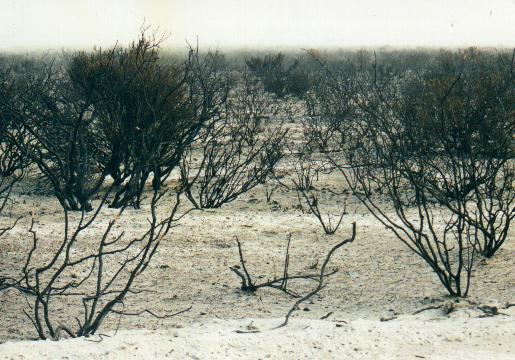
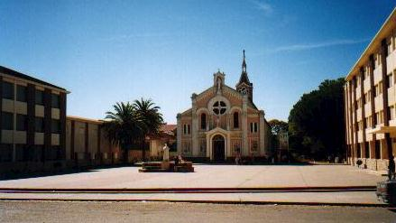

Día 15: Desde Isla Pavón hasta Trelew (979 km.) Recuerdo poco de este tramo que dedicamos básicamente a digerir kilómetros. Nos desviamos brevemente hacia Caleta Córdova, al norte de Comodoro Rivadavia, por una hora. Hicimos la parada de rigor para ver aves a 100 km. al sur de Trelew, y llegamos a destino a las 21:30, cuando ya estaba casi oscuro. ¿Tan temprano oscurece? Día 16: Desde Trelew hasta Pedro Luro (725 km.) Comenzamos el día en la playa del Cerro Avanzado, próxima a Puerto Madryn, de la cual estamos encariñados como resultado de múltiples visitas realizadas en los últimos 20 años. Allí, siendo la última posibilidad de buscar caracoles, encontré mis primeros Epitonium. Son caracoles blancos, con forma de cucuruchos enroscados, totalmente revestidos de costillas a razón de unas 20 por vuelta. Faltaría agregar que los ejemplares que encontré son muy pequeños: de 8 a 10 mm cada uno, lo cual da una idea de la dificultad de hallarlos entre las conchillas rotas de la costa. Lo primero entonces es arrodillarse, tal vez rezar un poco, y luego encorvarse sobre los caracolitos y mejillones rotos y pacientemente rastrillar la superficie con la vista, mirando atentamente. Al poco tiempo encontré mi primer espécimen. ¡Que alegría! Es notable como nuestro versátil cerebro adquiere habilidades
nuevas. Mi vista recorre la superficie del suelo a una velocidad relativamente
elevada, pero encuentro lo que estoy buscando. El suelo esta tapizado de
formas infinitamente complejas de valvas rotas blancas, negras y otros
colores, entremezclada con arenas gruesas, caracoles espiralados comunes
que no son de mi interés, trozos de alga, etc. Y sin embargo uno
logra identificar rápidamente objetos espiralados que se asemejan
al caracol buscado. Siento que toda la “capacidad de cómputo” del
intelecto está volcada hacia el reconocimiento de patrones geométricos,
procesando a velocidad relámpago la sucesión continua de
imágenes proveniente de la vista. Tras las dos semanas de viaje
sometido a la intensa práctica en este arte, tratando asiduamente
de hallar todas las variedades posibles en cada playa que he pisado, estoy
viendo ahora los resultados… Hacia el mediodía pasamos a visitar a un amigo de mi época escolar, el veterinario y eximio especialista en mamíferos marinos: Guillermo Harris, presidente de la Fundación Patagonia Natural. Además de su gentil hospitalidad y amena conversación, Guillermo explicó la posible causa del fenómeno aparentemente meteorológico que había creado una extraña bruma en toda la región: un incendio de monte. Tras despedirnos y retomar la eterna Ruta 3 hacia el norte, observamos la lenta pero sostenida intensificación de la nube de cenizas y humo. Casi 300 km. más al norte, al llegar a San Antonio Oeste, aún no habíamos alcanzado el epicentro. ¿Qué tamaño de fuego es éste, que afecta el aire de lugares tan distantes como Madryn? No cabía respuesta lógica en nuestras mentes. Pero pronto habríamos de comprender… Luego de tomar la Ruta 3 hacia el este, encontramos los campos quemados. Kilómetros y kilómetros y kilómetros de monte negro, consumido por las llamas. Este es el lugar donde había visto tantas aves cuando veníamos hacia el sur, donde había expresado el deseo de detenernos un momento a observar. Ahora, dos semanas después, no existía campo natural, sino campo quemado. Nos detuvimos, pero solo para sacar una lúgubre foto ¿Qué habrá hecho el fuego con los pichones, tortugas y otros seres que no tienen la movilidad necesaria para escapar su rápido avance? Seguramente se consumieron en las llamas, lo mismo que ocurrió con mi esperanza de recorrer estos montes a pie.  Este paisaje desolador estaba presente a lo largo de todo este tramo de ruta En realidad aquí no terminaba la historia, puesto que en las próximas semanas se reiterarían más incendios, tan gigantescos como este. En el tramo entre Viedma y Pedro Luro, divisamos la silueta de un gran ñandú, seguramente el macho, quién es el encargado de cuidar a sus “charitos”, algunos de los cuales se habían acercado peligrosamente al alambrado. Toda una tentación para los cazadores… Si bien no ha de ser de mucho interés al lector enterarse de la música que escuchamos en el viaje, sucedió una coincidencia notable que me veo obligado a contar. Veníamos oyendo la hermosa música de “La Novicia Rebelde”, la que me trae intensos recuerdos. Una de los temas es una gloriosa marcha nupcial, brillantemente compuesta, pomposa, triunfal, sacra y majestuosa, ejecutada con organo de catedral y orquesta. En el preciso momento en que comenzó, nuestro vehículo estaba enfilado directamente hacia la capilla del Descanso Ceferiniano. Así, con el volumen fuerte, el ánimo alegre, y todos - hasta los pistones del auto - en sincronía con el compás de la música, cruzamos el sacro portal de entrada, y avanzamos marcialmente por la galería de enormes eucaliptus que demarcaban el camino de acceso que enfila hacia la nave de la iglesia. Era imposible ignorar la perfecta correspondencia de lo que sucedía dentro y fuera del auto ¡Que entrada triunfal para coronar nuestro regreso a Pedro Luro, tras haber realizado un viaje estupendo por el sur!  Capilla del Descanso Ceferiniano de Pedro Luro - ¿Y la música? Día 17: Desde Pedro Luro hasta Buenos Aires (797 km.) El último día del viaje no marcó demasiadas aventuras.
Lo que más recuerdo son algunas aves: algunos pocos Aguiluchos Langosteros
en bandadas de 2 o 3, muy dispersos, y una bandada de los patos más
hermosos que existen: los Gargantilla. ¡Que vacaciones!
|